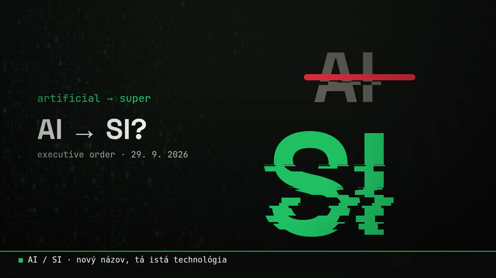

Blog ·
AI je odteraz SI? Trump premenoval umelú inteligenciu
Americké úrady už nesmú písať „AI“. Odteraz je to „Super Intelligence“, skrátene SI. Musk hneď sľúbil premenovať aj svoju firmu. Čo sa vlastne zmenilo a čo to znamená pre nás v Európe?

Toto si nevymyslíš. 29. septembra 2026 podpísal Donald Trump výkonné nariadenie s názvom Inaugurating the Era of Super Intelligence. Po slovensky zhruba „Začíname éru superinteligencie“.
A čo v ňom je? Americké federálne úrady majú prestať používať slová „Artificial Intelligence“ a „AI“. Namiesto nich majú písať „Super Intelligence“ a „SI“. Vo všetkých úradných listoch, na weboch, v tlačových správach aj v interných dokumentoch.
Prečo?
Podľa nariadenia slovo „superinteligencia“ lepšie vystihuje, čo táto technológia sľubuje a ako rýchlo napreduje. Podľa správ Trumpovi prekážalo, že slovo „artificial“ (umelý) znie, akoby to bolo niečo falošné.
Nariadenie má aj vážnejšiu časť. Poradca prezidenta pre vedu a technológie má do 60 dní, teda do konca novembra, navrhnúť oficiálnu definíciu „SI“ a text zákona, ktorý by ju zaviedol. Právnici z Wiley a Freshfields upozorňujú, že samotné nariadenie zatiaľ nemení, čo sa reguluje. Otvára ale dvere tomu, aby sa neskôr menili aj zákony, ktoré dnes hovoria o „AI“.
Zatiaľ sa zmenilo len slovo. Ale keď sa zmení slovo v zákone, môže sa zmeniť aj to, na čo sa zákon vzťahuje.
Musk okamžite naskočil
Elon Musk na X odpovedal na otázku, či sa jeho SpaceXAI premenuje na SpaceXSI, jednoducho: „Yes, we will make that change.“ Áno, zmeníme to. Kedy, to nepovedal, a podľa správ z minulého týždňa na webe ani na X zatiaľ nič premenované nebolo.
A čo my v Európe?
Nás sa to priamo netýka. Európske nariadenie o umelej inteligencii (EU AI Act) hovorí stále o „AI“ a nič na tom nemení. Slovenské úrady, školy aj firmy budú teda ďalej písať umelá inteligencia.
Ale pozor na jednu vec: keď budeš čítať americké zdroje, návody alebo zmluvy, môžeš odteraz natrafiť na „SI“. Znamená to presne to isté. Žiadna nová technológia, len nový názov.
Môj pohľad
Úprimne? Zasmial som sa. A potom som si na web pridal prepínač AI / SI. Nájdeš ho hore pod tlačidlom Prispôsobiť. Prepni ho a celý web ti bude hovoriť o superinteligencii, aj ja budem „Bojíš sa superinteligencie? Chill, ja ti to vysvetlím.“
Na tom, čo robím, sa nemení nič. Či to voláš AI, SI alebo „ten chat“, stále ide o to isté: nech za teba robí nudnú robotu, kým ty robíš to podstatné.
Chceš si niečo také vyskúšať sám? Na 3-hodinovej session ťa to naučím na tvojich vlastných veciach.
15 min hovor zadarmo